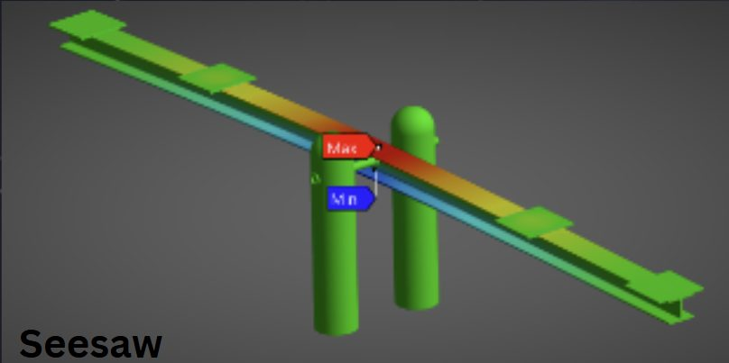
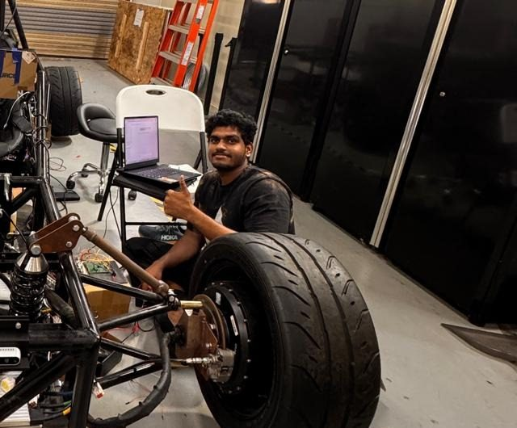
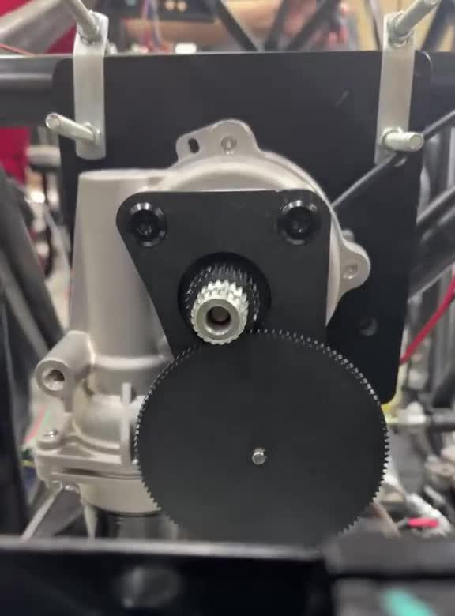
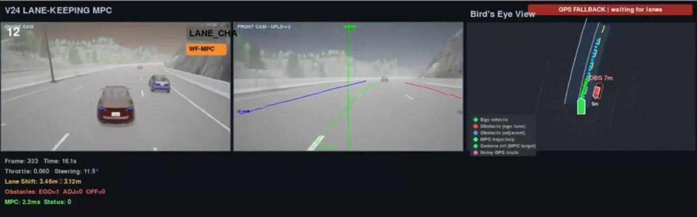
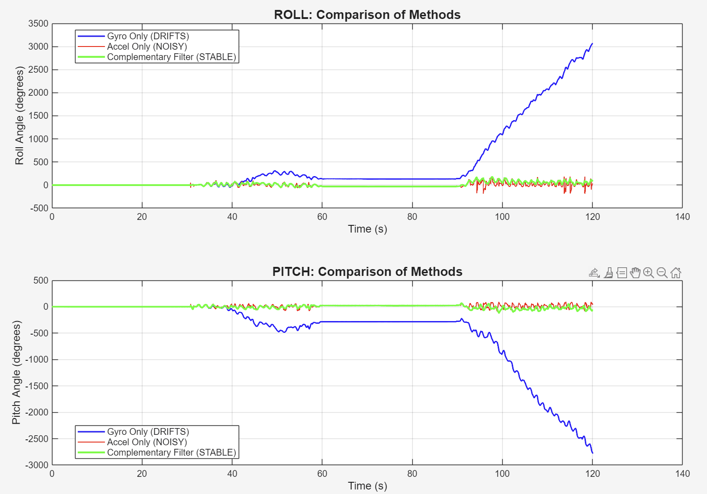
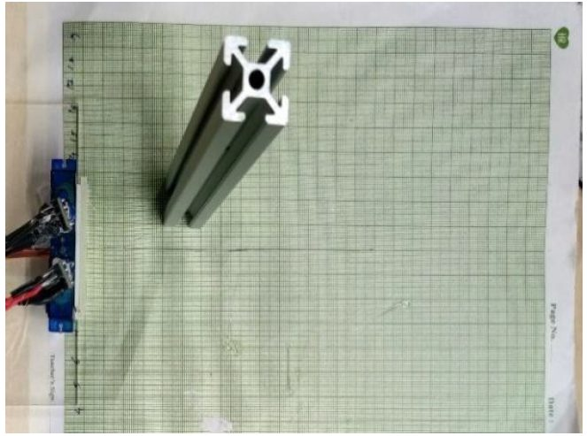
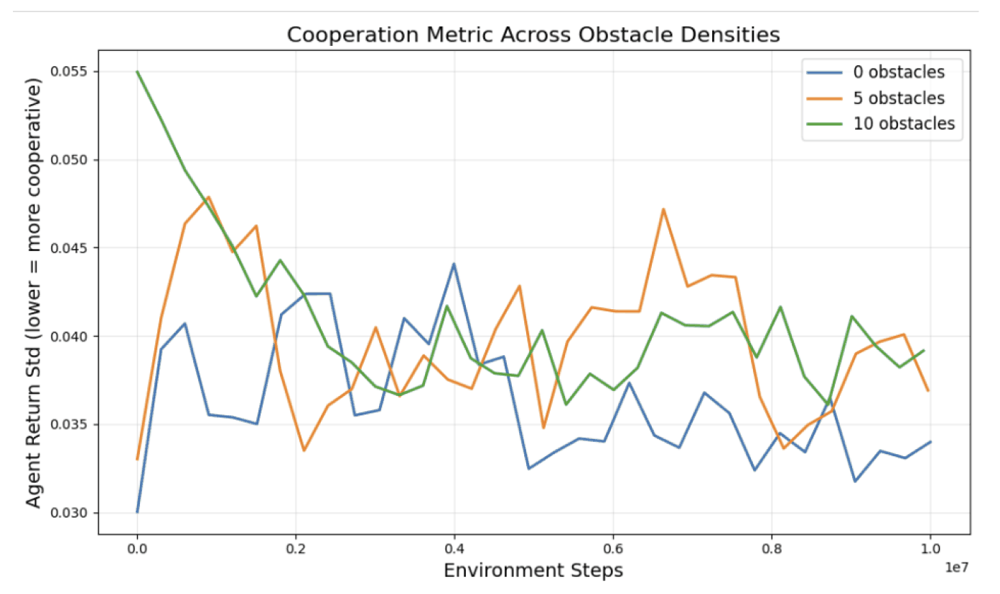

Playground equipment and trailer hitch in ANSYS
Four playground structures optimized to a factor of safety of 4 to 10, plus a trailer hitch checked with a mesh convergence study.
Read more →Mechanical engineer · Hardware design and integration · Robotics
I love turning designs on a CAD screen into systems that work in the real world. I ask why on every part of a design, I look for the simplest version that still does the job, and I build and test what I design.
Master's student at Texas A&M, graduating December 2026, and open to full-time roles.

Three projects where I owned the hardware from the first sketch to a tested part.

Thesis · Texas A&M · 2024 to now
Arn Autonomy · San Francisco · Summer 2025
The robot is still in development at the company, so I can't share photos.
CREAT UNO Minda · Pune · 2023 to 2024
These are company products, so I can't share photos.
Analysis, controls and sensing projects from my coursework and thesis.

Four playground structures optimized to a factor of safety of 4 to 10, plus a trailer hitch checked with a mesh convergence study.
Read more →
My thesis controllers: 6 overtakes on a 40 m obstacle course with zero collisions.
Read more →Four wheel torques chosen every 20 ms. About 60% less path-tracking error than an equal torque split in hard corners.
Read more →
Blended gyro and accelerometer, tracked gyro bias across temperature, and adapted the blend to motion.
Read more →
Turning range readings from known sensor positions into obstacle coordinates.
Read more →Motor model from first principles, then DOE and Monte Carlo to control output spread.
Read more →Regression and ANOVA showed translational speed drives vibration most.
Read more →
How obstacles change cooperation between learning agents.
Read more →LiDAR mapping, RViz and goal-driven navigation on a small robot.
Read more →I'm graduating in December 2026 and looking for full-time mechanical, robotics and hardware roles. I'm happy to relocate.